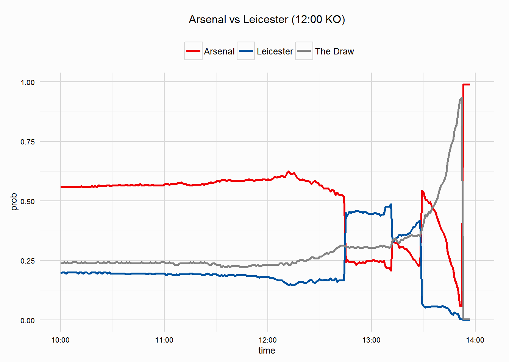

betfaiR
betfair super sunday - 14/02/16
This is a follow up post to the cron jobs w/ betfaiR post, which walked through scheduling a task to periodically collect betfair data. The data collected came from 3 markets on 14/02/16, the early match between Arsenal and Leicester, the late match between Man City and Spurs, and the Premier League Outright market. This post will summarise and plot some of the data, given some of action, especially in the early game which saw Leicester take the lead, get a man sent off and then lose, we should see some interest movements not only in that market but the outright market too.
(there was a period, around 23minutes from 15:57 to 16:20, where the task was stopped as my laptop was running off its battery, not something I saw being an issue)
arsenal vs leicester
The early game saw league leaders Leicester travel to the Emirates fresh off a superb away performance at the Etihad. Arsenal were favourites going into the crucial game, starting the game at 1.69 (having been 1.79 at 10:00am), while Leicester
